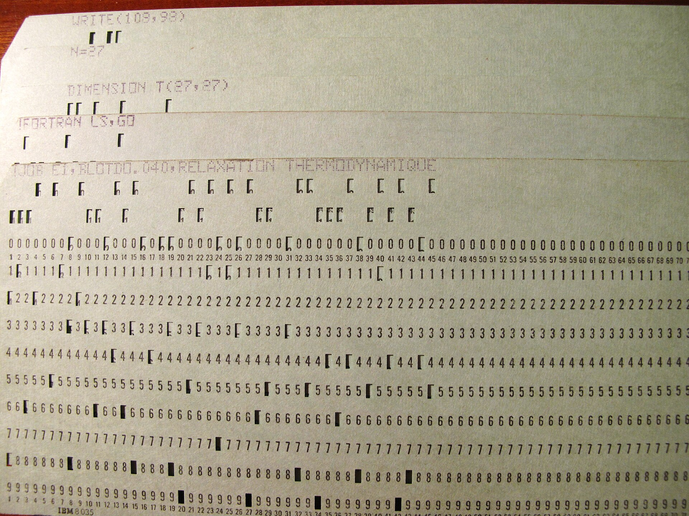
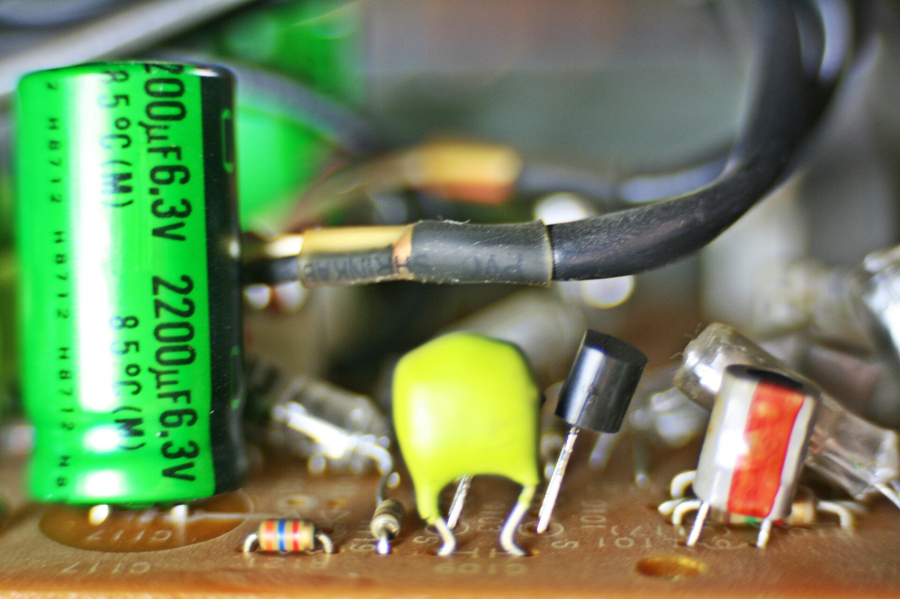

Analiza un archivo .zip o .rar de cualquier proyecto. Todo ocurre en tu equipo.
Detección de código generado por IA y auditoría completa: seguridad, rendimiento y calidad, sin enviar nada a la nube.
Siete señales de IA por archivo y una auditoría de seis categorías, con hallazgos y plan de acción.
7 señales ponderadas (nombres genéricos, densidad, comentarios, formato, estructura…) dan un score 0–100 con veredicto.
SQLi, XSS, N+1, secretos embebidos, crypto débil y llamadas inseguras, con ubicación y arreglo recomendado.
Calidad, mantenibilidad, rendimiento, seguridad, testabilidad y escalabilidad, cada una de 0 a 100.
Un clic y descargas el análisis completo: resumen, señales, hallazgos y plan, listo para compartir.
JavaScript, TypeScript, Python, PHP, Java, Go, Rust, SQL y más de 40 lenguajes, detectados por extensión.
Python estándar, sin paquetes externos ni API keys. Tus archivos no salen nunca de tu máquina.
Del archivo comprimido al informe, cuatro pasos en tu equipo.
Se acepta cualquier proyecto comprimido. Se ignoran carpetas como node_modules, .git o dist.
.zip · .rar
Extracción protegida contra recorrido de rutas, con topes de tamaño y número de archivos.
1,5 MB · 8.000 archivosDetección de IA por archivo y auditoría estática de seguridad, rendimiento y calidad.
en procesoResumen, señales por archivo, hallazgos con su arreglo y un plan de acción priorizado.
informe.md

Ejemplo con un proyecto de prueba: tres archivos y dos hallazgos reales.
Lo que suele preguntarse antes de subir un proyecto.
No. El análisis corre en un servidor local de tu propia máquina y los archivos se borran al terminar. No hay conexiones salientes, claves de API ni telemetría.
Archivos .zip y .rar. Los .zip funcionan sin nada extra; los .rar necesitan WinRAR o el paquete rarfile con un backend unrar.
Más de 45 extensiones: JavaScript, TypeScript, Python, PHP, Java, Kotlin, Go, Rust, C/C++, C#, Swift, Ruby, SQL, HTML, CSS y más. El lenguaje se detecta por extensión.
No, y conviene decirlo: es heurística. Sirve como triaje para orientar una revisión, no como prueba forense. Un código humano típico suele puntuar entre 15 y 25.
No reemplaza a una herramienta SAST. Los hallazgos son estáticos y basados en patrones: ayudan a priorizar, pero una revisión humana sigue siendo necesaria.
Sube un archivo .zip o .rar y obtén la detección de IA y la auditoría completa. Sin registrarte y sin enviar nada.